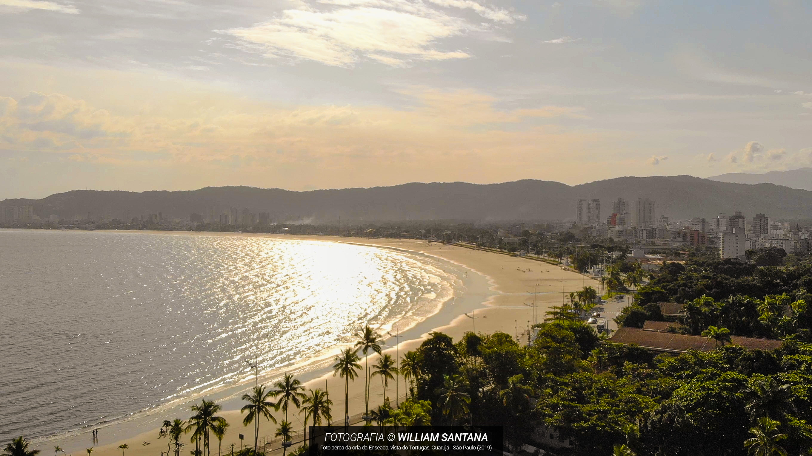
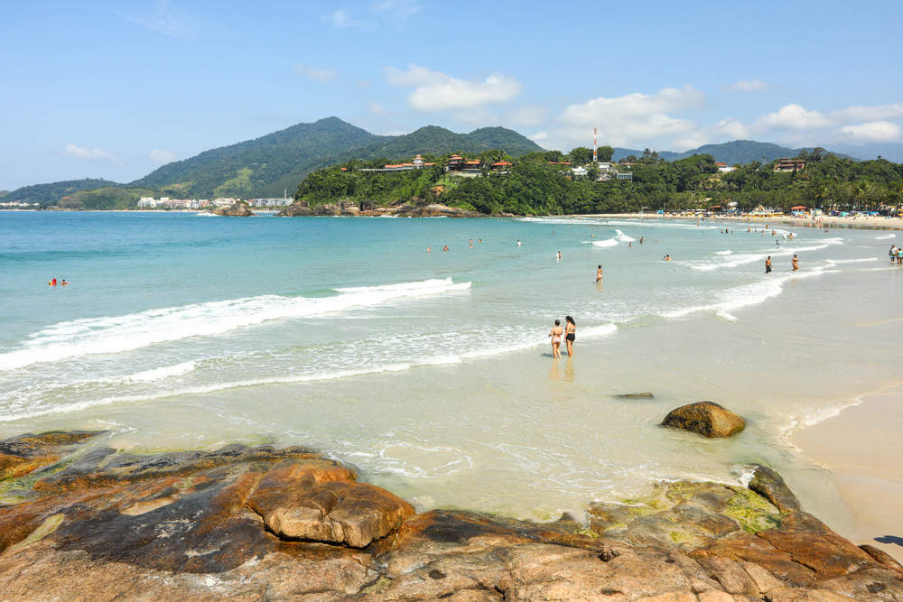

5 LUGARES PROXIMOS À SP PARA SE VISITAR DE MOTO
Você esta em casa em um feriadão prolongado, no tédio sem nada a fazer, uma boa coisa a se fazer é uma viagem, se você mora em SP abixo vou dar algumas dicas de lugares maravilhosos a serem visitados.
PRAIA DA ENSEADA GUARUJÁ SP.
Localizada no litoral Paulista a praia da enseada é uma praia muito linda e limpa, com milhares de banhistas todos os dias é um otimo lugar para se ir nas horas vagas
SANTUARIO DE NOSSA SENHORA APARECIDA
Um lugar lindo e tranquilo para se ir com a família, o Santuario de Nossa senhora a aparecida esta aberto todos os dias esperando você e sua família
PARQUE VILLA-LOBOS

Que tal um passeio de bike? Uma otima sugestão para um passeio em família, com uma grande area verde esse parque é um dos lugares mais movimentados de São Paulo.
PRAIA DO TENORIO - UBATUBA SP
Outra belissima praia localizada no litoral Paulista, uma dos destinos mais procurados no litoral de SP com diversas opções para divertimento desde quiosques a alugeis de equipamentos esportivos para mergulho
ROTEIRO DO VINHO - SÃO ROQUE

Esse lindo lugar fica no interior de SP, com diversas viniculas proximas um local com uma paz fora do comum, um belissimo com diversas caravanas durante o ano este local fica sempre animado com muitos visitantes.